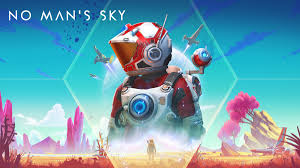
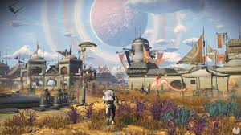

No Man's Sky es un juego de exploración y supervivencia en un universo abierto, desarrollado y publicado por Hello Games. Lanzado inicialmente en 2016, No Man's Sky tuvo un lanzamiento muy esperado pero recibió críticas mixtas debido a la falta de ciertas características prometidas y problemas técnicos. Sin embargo, a lo largo de los años, Hello Games ha trabajado incansablemente en mejorar el juego, lanzando numerosas actualizaciones gratuitas que han transformado el título en una experiencia mucho más rica y completa. Hoy en día, No Man's Sky es considerado un ejemplo de cómo un juego puede evolucionar y mejorar con el tiempo gracias al apoyo continuo del desarrollador y su comunidad.
¿De qué trata No Man's Sky?
No Man's Sky está ambientado en un vasto universo generado proceduralmente, lo que significa que cada planeta, cada estrella y cada sistema solar son únicos y se crean de forma aleatoria. Los jugadores toman el rol de un explorador conocido como el Viajero, que comienza en un planeta desconocido y debe sobrevivir mientras explora, recopila recursos y mejora su equipo, como naves y exotrajes.
 